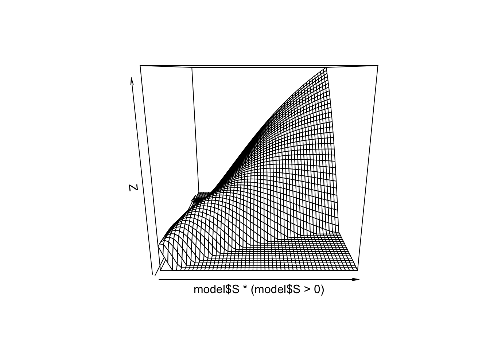
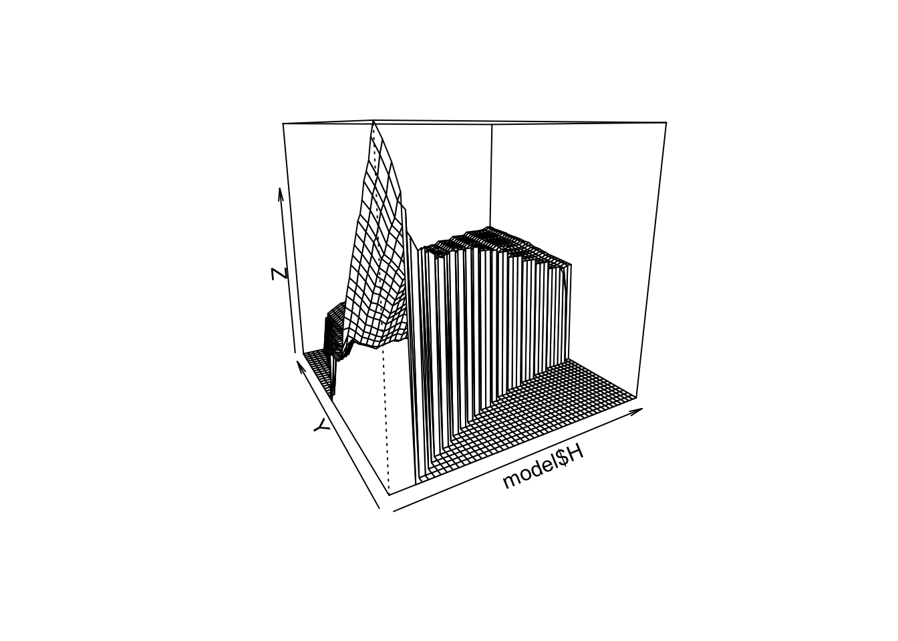

The goal of this homework is to
This is the version from 2017-04-10. Please check for updates later on.
#some imports
require(gtools)
require(data.table)
require(ggplot2)
require(reshape)
require(readstata13)
require(RcppSimpleTensor)
library(testthat)
source("../../ScPo-Labor-sol/src/search-HW.r") # you do not have access to this repo which has the solutions! :-) !The equilibrium of Shimer and Smith can be solved by iterating on the Bellman equations \(W_0\), \(\Pi_0\) and the surplus function \(S\). They are given by:
\[ (r+s)S(x,y) = f(x,y) -r W_0(x) - r \Pi_0(y) \]
\[ r W_0(x) = b + \kappa \alpha \int \max \{ S(x,y') , 0\} v(y') dy'\]
\[ r \Pi_0(y) = -c + \kappa (1-\alpha) \int \max \{ S(x',y) , 0\} u(x') dx'\]
This needs to be jointly solved for with the endogenous distribution of matches \(h(x,y)\) which must satify
\[ h(x,y) = (1-s) h(x,y) 1[S(x,y)\geq 0] + \kappa 1[S(x,y)\geq 0] u(x) v(y)\]
Notice that we endogenize the arrival rates here. This means that we had in class
\[ r W_0(x) = b + \lambda \alpha \int \max \{ S(x,y') , 0\} \frac{v(y')}{V} dy'\] where \(V=\int v(x)dz\) is the mass of all vacancies. With the matching function \(N=m(x,y)\) and \(\lambda = \frac{N}{U}\) we define get the above formulation by realizing that \(\kappa = \frac{N}{UV}\).
Here is code that will create a parameter set to initialize your model with some starting values.
initp <- function(...) {
p = list()
p$ay = 0.2
p$nx = 50 # number of worker types
p$ny = 50 # number of firm types
p$sep = 0.02 # separation rate
p$r = 0.05 # interest rate
p$rho = -2 # prod func assortative strength [-2,2]
p$b = 0 # unemp
p$c = 0 # vacancy cost
p$alpha = 0.5 # bargaining power
p$fsize = 50 # firm size
p$m = 0.4 # matching function parameter
p$M= 1.5 # mass of firms / mass of workers
p$noise = 0.5 # wage disturbance
#p$pf = function(x,y,z=0,p) x*y + z
p$pf = function(x,y,z=0,p) ( x^p$rho + y^p$rho )^(1/p$rho) + p$ay # haggerdorn law manovski
sp = list(...)
for (n in names(sp)) {
p[[n]] = sp[[n]]
}
return(p)
}
#' Spread Array into dimensions
#'
#' this is a utility function that spreads an array into a given dimesion
#' this is like `repmat` in julia/matlab
spread <- function (A, loc, dims) {
if (!(is.array(A))) {
A = array(A, dim = c(length(A)))
}
adims = dim(A)
l = length(loc)
if (max(loc) > length(dim(A)) + l) {
stop("incorrect dimensions in spread")
}
sdim = c(dim(A), dims)
edim = c()
oi = 1
ni = length(dim(A)) + 1
for (i in c(1:(length(dim(A)) + l))) {
if (i %in% loc) {
edim = c(edim, ni)
ni = ni + 1
}
else {
edim = c(edim, oi)
oi = oi + 1
}
}
return(aperm(array(A, dim = sdim), edim))
}and here is some code that initializes the different functions needed inside your value function iteration proceedure:
X = spread( (0:(p$nx-1))/p$nx , 2, p$ny ) # worker heterogeneity
Y = spread( (0:(p$ny-1))/p$ny , 1, p$nx ) # firm heterogeneity
FF = p$pf(X,Y,0,p) # production function
W0 = rep(0,p$nx) # value of being unemployed (starting values)
P0 = rep(0,p$ny) # value of a vacancy (starting values)
H = array(0.8/(p$nx*p$ny),c(p$nx,p$ny)) # joint mass of matches (starting values)
U = rep(0.2/p$nx,p$nx) # mass of unemployed (starting values)
V = (p$M-0.8) * rep(1/p$ny,p$ny) # mass of vacant jobs (starting values)
S = FF / p$r # surplus of a match (starting values)As guidance here is how I compute the \(S(x,y)\) function and the \(\kappa\). You can use and install RcppSimpleTensor, or directly use the spread, colSums and rowSums functions. Note that it can be important to use relaxation parameters such as ctrl$rs here. This is because the Bellman equation is a contraction mapping, but the distribution jointly with the Bellman equations might note be.
kp = pmin(pmin(sum(U), p$m*sum(U)^.5 * sum(V)^.5),sum(V))/(sum(U) * sum(V))
S2 = t.S(FF,W0,P0,p$r) / ( p$r + p$sep)
dS = mean( (S - S2 )^2 )/mean( (S)^2 ) # distance
S = ctrl$rs * S + (1-ctrl$rs) * S2 # update by relaxation
wage = p$alpha * (p$sep + p$r) * S + p$r * spread(W0,2,p$ny)Question 1: Write a function that will iterate on the value functions and the distributions to find the fix point of the problem. Stop the loop when dS<1e-7. This requires for you to write down the equations to update \(H(x,y),V(y),U(x)\). Getting these flow equations is crucial. Instead of using the adding up constraint, I suggest you try to write the updating equations for H,V,U and then check that the total mass of workers is still 1 at each step of your loop. You may want to stick to this strategy:
To test your code, install the libary test_that and write a few test cases that will verify that your code is doing what you expect it to do! For instance, check that the h and u distribution sum to 1 for each x.
require(testthat)
test_that("Testing model sulotion", {
expect_true( all(diff(model$W0)>0), "W0 is increasing")
expect_true( all(diff(model$P0)>0), "W0 is increasing")
expect_true( abs(1-sum(model$H)-sum(model$U))<1e-8, label = "worker mass is 1")
}) With the default starting values, you should find the following figure:
p <- initp()
ctrl=list(maxiter=400,rs=0.5,rw=0.5,rh=0.8)
model = shimersmith.solve(p,ctrl)## [ 50] dS=2.109e-04 dH=4.333e-03 m=1.000e+00 kp=1.804420
## [100] dS=1.514e-07 dH=6.059e-05 m=1.000e+00 kp=1.868803
## [150] dS=2.040e-09 dH=9.005e-06 m=1.000e+00 kp=1.871217
## [200] dS=1.404e-08 dH=6.431e-06 m=1.000e+00 kp=1.871060
## [250] dS=1.739e-09 dH=6.185e-04 m=1.000e+00 kp=1.870762
## [300] dS=1.457e-07 dH=4.679e-06 m=1.000e+00 kp=1.871004
## [350] dS=4.287e-09 dH=2.063e-05 m=1.000e+00 kp=1.871352
## [400] dS=3.409e-10 dH=1.246e-06 m=1.000e+00 kp=1.871378
## all good persp(model$S*(model$S>0))
persp(model$H,theta=-30)
Question 2: Simulate a panel with N workers over T periods working in M firms. Note that N and M represents the number of IDs, not types. We want to create a data.table with columns i,t,x,y,spell,wage,fid.
You should start by simulating without worrying about the firm ids. Use a double for-loop, on time 1 draw \((x,y)\) from the stationary distribution of workers which is \(U(x) + H(x,y)\). Then for this given worker simulate the sequence of events that happens to him:
using the outcome of your model. A sequence of events of length T will be a given individuals. When you simulate a given individual, also store the spell number. This number should increase when the worker looses his job or finds a new job (this will be useful later). Set \(y=0\) when the worker is not employed.
Hint: When simulating, it is much faster to pre-allocate arrays such as X=array(0,T*N) for each variable, then fill these and create the sim data.table at the very end with sim = data.table(x=X,y=Y,t=T,i=I) and such.
At this point you should have a data.table with columns i,t,x,y,spell. Once we you have simulated this panel, we want to attach firms to spells. We are going to do this is a semi-naive way by randomly attaching firm ids to spells (the firm id needs to be fixed over a spell). Since the separation rate is the same in each job, we do not have to worry to weight them by the length of spells.
# we want to target a given firm size (that should be a parameter of your simulating function)
fsize = 200
sim = simulate(N,M,fsize) # you must write function simulate()
# inside `simulate`:
# we get spells information, randomly draw from firm without replacement
spells = unique(sim[y>0,list(i,spell,y)])
# this creates a unique firm id
spells[, fid:= as.integer(y + p$ny*sample( rep((1:ceiling(.N/fsize)),fsize*1.2),.N,replace=FALSE)),y]
# merge spells back into sim
setkey(spells,i,spell)
setkey(sim,i,spell)
sim[,fid := spells[sim,fid]]
# quick check!
assert_that(sim[,length(unique(y)),fid][,all(V1==1)])Hint: here you could make your life much easier if you insure that the firm ids are continuous (no gap) and start at 1. This will be convenient when indexing them later. (that’s what I did above.)
We finish this section by appending the wage. We want to append the equilibrium wage when working and \(b\) when not working. Here is a simple way to attach the wage and b:
sim[y>0, wage := model$wage[x,y]*exp(rnorm(.N)*noise),list(x,y)]
sim[y==0, wage := p$b]Hint: The command makes use of many of the functionalities of data.table. When calling sim[param1, param2 ,by=param3], param1 subset the table, param2 execute a commmand and using := assigns a new column. Finally param3 allows us to run the param2 within each values of param3, i.e. it groups the command. Within each we then use the variable .N which gives the size of the sub-group within param3, which allows us to draw exactly the right number of iid noises!
Question 3a: Yes, this is boring, but it will save you time in the end! Check that in your simulated data, you have the correct separation rate and correct matching probability per type! Also check that your simulated unemployment distribution is close to the U you solved for, and same for H. Report a scatter plot for each with true versus simulated.
Question 3b: Simulate a long time dimension like \(T=100\), then compute the sum of discounted future reward at \(t=1\) for each \(x\) and each \(y\), including \(y=0\). Take the mean of the expected values and check that it matches \(W_0(x)\) when \(y=0\) and check that it matches \(W_1(x,y)\) for the employed. Report a scatter plot for each with true versus simulated.
We now want to estimate the two-way fixed effect model of Abowd, Kramarz and Margolis. AKM requires to compute the smallest connected set among firms, but we are going to ignore this for now. Because of the way we simulated data, it is very unlikely that the connected set will not encompass all workers/firms.
Important: form now on, we work with log-wages.
TO estimate AKM we start by focusing on movers and we want to build the firms fix-effects. We are going to estimate it by OLS. We want to create a matrix of dummies for each firm and focus on movers only. Firm select the set of workers that are movers (they need to show up in at least 2 different firms ids). Make this selection using the data.table methods. It should look like:
movers_id = sim[y>0,list(N = <somthing that computes the number of firms>),by=i][N>=2,i] # a mover is a worker with more than 2 firms in his history
msim = sim[y>0][i %in% movers_id]We then create our matrix of regressors with each firm dummies. We want to use sparse matrices for that. Construct a sparse matrix of zeros using the SparseM package. You need to run through your msim table and put ones in the correct columns for each line, and take the wage for the dependent. Once the matrix of regressors and the dependent are constructed, use slm.fit to run a sparse OLS. You now have your firm fixed effects.
Finally, reattach the fixed effect to the data using the firm id. Call that column psi. Hint be carefull to correclty match the estimated fixed-effect to the correct firm in sim. This merge can be tricky, because you need to keep track of the fid in the order you put them in the matrix.
We can now recover the worker fix effect by differencing and attaching it to our simulated sample.
asim = sim[y>0,list(alpha = mean(wage - psi)),i]
setkey(asim,i)
setkey(sim,i)
sim[,alpha := asim[sim,alpha]]Question 4: Implement a function that takes your simulated data as input, then extracts both worker and firm fixed effects as suggested and finally reattaces these fixed effects to each row of the simulated data.
We are at the end of our work! We now want to check the estimated sorting from AKM and compare it to the true decomposition. To get the variance decomposition of AKM we compute the following:
fit_akm = lm(wage ~ alpha + psi,sim)
sim$res = residuals(fit)
pred = predict(fit_akm,type = "terms")
sim$k_hat = pred[,1]
sim$l_hat = pred[,2]
vardec_akm = sim[,cov(data.frame(wage,k_hat,l_hat,res))$cov]To get the best linear projection we do the folliwing:
fit = lm(wage ~ factor(x) + factor(y),sim)
sim$res = residuals(fit)
pred = predict(fit,type = "terms")
sim$k_hat = pred[,1]
sim$l_hat = pred[,2]
vardec_best = sim[,cov.wt( data.frame(y_imp,k_hat,l_hat,res))$cov]Question 5: Now we want to compare the best decomposition to the akm decomposition under values of \(\rho\) in the production function that spans positive to negative sorting. Ideally we want to compare these under different firm sizes, to measure the incendital parameter bias. The ideal answer her would show that we few movers the correlation can be strongly negatively correlated, however in the case of PAM, with enough data, AKM should not be doing so badly!